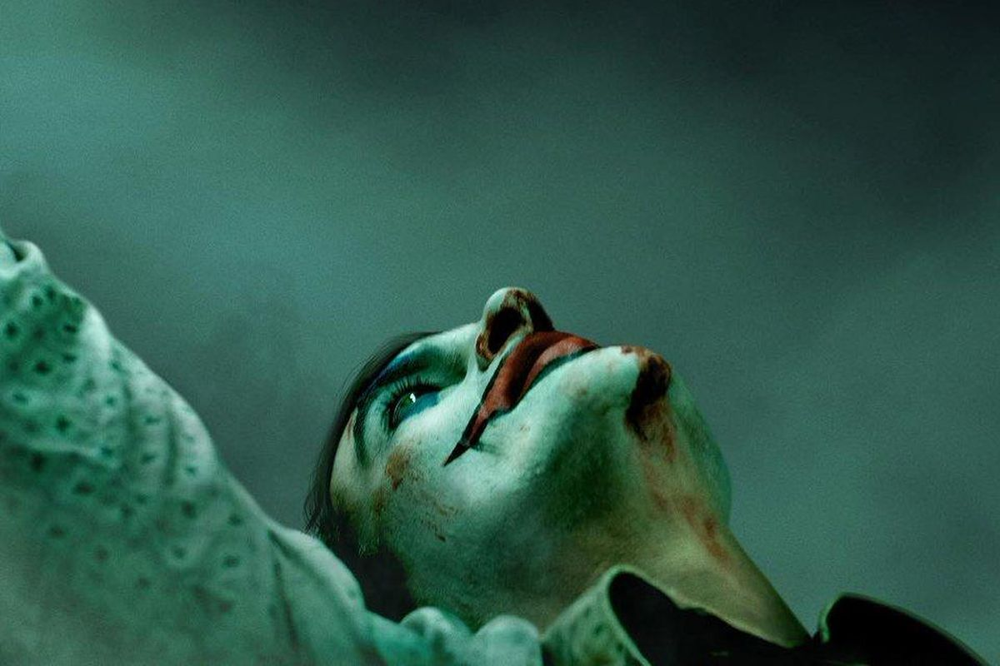
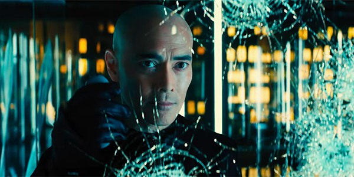

Jocker
Filmin Konusu
Joker, başarısız bir komedyen olan Arthur Fleck'in hayatına odaklanıyor. Toplum tarafından dışlanan bir adam olan Arthur, hayatta yapayalnızdır. Sürekli bir bağ kurma arayışında olan Arthur, yaşamını taktığı iki maske ile geçirir. Gündüzleri, geçimini sağlamak için palyaço maskesini yüzüne takan Arthur, geceleri ise asla üzerinden silip atamayacağı bir maske takar. Babasız büyüyen Arthur’u en yakın arkadaşı olan annesi Happy adıyla çağırır. Bu lakap, Arthur’un içindeki acıyı gizlemesine yardımcı olur. Ancak maruz kaldığı zorbalıklar, onun gitgide toluma aykırı bir adam haline gelmesine neden olur. Yavaş yavaş psikolojik olarak tekinsiz sulara yelken açılan Arthur, bir süre sonra kendisini Gotham Şehri’nde suç ve kaosun içinde bulur. Arthur, zamanla kendi kimliğinden uzaklaşıp Joker karakterine bürünür.
 Life
Life
Life
Filmin Konusu
Uluslararası bir uzay istasyonunda görevli altı kişi, insanlık tarihinde çığır açacak bir keşfin eşiğindedir. Bu görevli ekip, Mars'ta ilk kez hayat olduğuna dair ip uçları bulur. Ekip araştırmalarını ilerlettikçe, beklenmedik sonuçlar almaya başlar çünkü buldukları bu hayat formu, kimsenin tahmin edemeyeceği kadar zekidir. Daniel Espinosa'nın yönettiği filmin senaryosunu Rhett Reese ve Paul Wernick kaleme aldı. Oyuncu kadrosunda ise Ryan Reynolds, Jake Gyllenhaal ve Rebecca Ferguson gibi isimlerin yer alıyor.
Shazam! 6 Güç
Filmin Konusu
Herkesin içinde bir süper kahraman yatar, kimileri için bu birkaç sihirli sözcük ile ortaya çıkabilir! 1939 yılında yaratılan süper kahraman Shazam, genç Billy Batson'ın ihtiyaç anlarında sihirli sözcükleri söyleyerek dönüşebildiği bir süper kahraman. Sihirli sözcükleri söylediği an dünyanın en güçlü ölümlüsüne dönüşen karakter, gündelik hayatında okul ödevleri gibi meselelerle boğuşurken, süper kahraman olduğunda da dünyanın güvenliği için mücadele veriyor. Süleyman'ın bilgeliği, Herkül'ün gücü, Atlas'ın dayanıklığı, Zeus'un görlemi, Aşil'in cesareti ve Merkür'ün hızına sahip olan karakter, edindiği güçlerin sahiplerinin baş harfleri ile S.H.A.Z.A.M. adını alıyor. Peki bu güçlü yetişkin bedenini yöneten küçük bir çocuğun ruhu bir araya gelince ortaya nasıl bir kahraman çıkıyor? Uçabilir mi? X-ışını görüşü var mı? Ellerinden yıldırım atabiliyor mu? Sosyal bilgiler sınavını geçebilecek mi? Shazam yeteneklerinin sınırlarını bir çocuğun neşeli pervasızlığıyla test etmeye koyulur. Ancak, Dr. Thaddeus Sivana tarafından kontrol edilen kötülüklerin ölümcül güçleriyle savaşmak için bu yetkilere hızlıca hakim olmayı öğremesi gerekecektir...
 Avengers: Endgame
Avengers: Endgame
Avengers: Endgame
Filmin Konusu
"Avengers Infinity War"un ardından pek çok süper kahraman küle dönüşmüştür. Doktor Strange, Gamora, Drax, Mantis, genç Örümcek Adam, Black Panther, Bucky Barnes, Groot, Scarlet Witch, Vision, Star Lord, Maria Hill, The Wasp ve Nick Fury gibi pek çok kahraman, Thanos'un Sonsuzluk Eldiveni'ni ele geçirmesi ve kendi dengesini kurması yüzünden yok olmuştur ve dünya umutsuz haldedir. Dünya üzerinde kalan Black Widow, Kaptan Amerika, Thor ve Hulk kendi yaslarını tutmaktayken, Iron ve Nebula ise kontrol edemedikleri bir uzay gemisinin içinde, uzay boşluğunda sürüklenmektedirler. Süper kahramanlar takımı için işler pek de iyi görünmemektedir. Ancak Kuantum Bölgesi'nden çıkmanın bir yolunu bularak Avengers ekibinin kalan üyelerine giden Ant-Man, yeni bir umut ışığı olacaktır. Daha önce var olduğunu bilmedikleri bölgeler, kahramanlar ve evrenlerin varlığını öğrenen ekip, Thanos'un kurduğu bu çarpık dengeyi değiştirmek ve kendilerinden alınanı geri getirmek için hayatlarının en büyük mücadelesine girişeceklerdir. Hepsi kişisel olarak önem verdikleri şeyleri kaybetmiş olan kahramanlarımız için intikam vakti gelmiştir.
Pi'nin Yaşamı
Filmin Konusu
Hindistan’dan Kanada’ya giden bir yük gemisi, içindeki hemen hemen tüm canlılarla birlikte trajik şekilde batar. Bir can kurtaran filikası, uçsuz bucaksız vahşi Pasifik Okyanusu'nun ortasında yapayalnız kalır. Sandalın hayatta kalmayı başarabilen mürettebatı ise bir sırtlan, kırık bacaklı bir zebra, bir orangutan, Richard Parker adında üç yüz kiloluk bir Bengal kaplanı ve Pi adlı 16 yaşında Hintli bir çocuktan oluşmaktadır. Pi'nin hayvanat bahçesi işleten ve hayvanlarıyla göç yoluna koyulan ailesi, batan gemide yaşamını kaybetmiştir. Pi, kurtuluş yok gibi görünen bu okyanusta zayıf bir sandalda yanındaki hayvanlarla birlikte hayatta kalma savaşı verir ve keskin zekası ve zooloji bilgisiyle besin zincirine kurban gitmez. Ama şimdi Bengal Kaplanı ile teknede baş başa kalmıştır. Dev kaplana yem olmamak için hayvanla anlaşmanın ve yakınlaşmanın yollarını bulur. Sıra dışı yolculuk sona ermeden büyülü bir adaya varacaktır... Oscarlı sinemacı Ang Lee'nin yönetmenliğinde sıra dışı bir öykü sunan filmin kadrosu ise oldukça renkli. Daha önce oyunculuk deneyimi bulunmayan Suraj Sharma'nın Pi'yi canlandırdığı yapımda, ayrıca Tobey Maguire, Irrfan Khan, Adil Hussain rol alıyor.
Melefiz
Filmin Konusu
Klasik Uyuyan Güzel masalına hiç kötünün tarafından bakmayı denediniz mi? Barışçıl bir orman krallığında büyüdüğü için huzurlu bir hayata sahip olan Malefiz, görkemli siyah kanatlara sahip güzel, saf ve genç bir kadındır, ta ki bir zamanlar inandığı adam olan Stephan topraklarının düzenini tehdit edinceye kadar… Malefiz, topraklarının koruyucusu olur ama acımasız bir ihanete uğrayınca o saf kalbi taşa dönüşür. Onun bu kadar kin ve öfke dolu olmasının nedeni budur, Aurora'yı 100 yıllık bir ölüme mahkum etmesi de tüm bu çektiği acıların sonucudur... Bu lanetin hikayesini anlatan filmin yönetmenliğini Robert Stromberg üstlenirken, başrol Malefiz'i Angelina Jolie canlandırıyor. Genç prenses ise Elle Fanning oynarken kendisine kadroda Sharlto Copley, Miranda Richardson, Sam Riley, Kenneth Cranham gibi tecrübeli oyuncular eşlik ediyor.
Addams Ailesi
Filmin Konusu
Kocasına ve çocuklarına kendini adamış bir kadın olan Morticia, ailesini bir arada tutan soluk tutkaldır. Güler yüzlü, kötücül ve tutkulu bir şekilde karısına aşık olan aile babası Gomez, her zaman girişimci ruhunu korumaktadır. Ailenin çocukları da oldukça şahsına münhasır bireylerdir. Uzun örgüleri ve iğneleyici mizahı ile zeki genç kız Wednesday ve bulabileceği en büyük tehdit ve tehlikelerin peşinden koşan 10 yaşındaki Pugsley. Ancak evin bireyleri bunlarla sınırlı değildir. Ailenin çılgın macası Fester iyi huylu, neşeli ve her şekilde kargaşaya yol açabilirken, Büyükanne ise yarasalar ve kafatasları gibi şekiller vererek pişirdiği şekerli kurabiyeleri seven torunlarına tapar. Aile yaklaşan kutlamaları için hazırlıkların ortasındayken, Margaux Needler ortaya çıkar. Margaux Needler sevilen bir reality-show programının kraliçesidir ve banliyö tipi pastel mükemmelliğe kendini adamıştır. Bu iki farklı cephenin karşılaşması nasıl sonuçlanacaktır?...
Parazit
Filmin Konusu
Park Ailesi'yle tanışın: soyla gelen servetin klasik bir tablosu. Diğer yanda ise Kim Ailesi, sokak zekası bakımından zengin ama başka hiçbir zenginliğe sahip değil. Şans veya kader olsun, bu iki ev halkı bir şekilde bir araya gelir ve Kim ailesi altın bir fırsatın varlığını hemen sezer. Kolej çağındaki Ki-woo tarafından manipülasyon konusunda yetiştirilen Kim çocukları, öğretmen ve sanat terapisti görevleriyle kendilerini Park ailesinin arasına çabucak yerleştirir. Kim'ler “vazgeçilmez” lüks hizmetler sunarken, Parklar ise habersizce evlerindeki her şeyi Kim ailesine kaybetmektedir. Ancak kısa sürede bu düzen bir tehditle karşılaşır. Asalak bir misafir Kim ailesinin yeni keşfettikleri konforu tehdit eder hale geldiğinde, vahşi ve zorlayıcı bir üstünlük mücadelesi patlak verir. Bu mücadele Kim ve Park aileleri arasındaki kırılgan ekosistemi yıkmakla tehdit etmektedir...
 John Wick: Chapter 3
John Wick: Chapter 3

John Wick: Chapter 3
Filmin Konusu
John Wick: Chapter 3 - Parabellum, gizli suikastçı birliğinden atılan John Wick'in, kellesi karşılığında ödül almak için peşine düşen suikastçılara karşı verdiği mücadeleyi konu ediyor. John Wick iki nedenden ötürü firaridir. Kellesi üzerine 14 milyon dolarlık açık sözleşme konulmuştur ve temel bir kuralı ihlal etmiştir; Continental Hotel'de birini öldürmüştür. Kurbanı ise açık kontratı sunan Yüksek Masa üyesidir. İşi bitmiş olması gereken John'a otelin yöneticisi Winston tarafından bir saatlik bir kaçış süresi verilir. Ardından üyeliği iptal edilecek, tüm hizmetlerden men edilecek ve diğer üyelerle iletişimi kesilecektir. John'un New York City'den kaçma mücadelesinde güvenebileceği tek şey servis endüstrisidir...
 Örümcek-Adam: Evden Uzakta
Örümcek-Adam: Evden Uzakta
Örümcek-Adam: Evden Uzakta
Filmin Konusu
Örümcek-Adam: Evden Uzakta, arkadaşları ile gittiği okul gezisi sırasında gizemli bir görev üstlenmek zorunda kalan Peter Parker'a odaklanıyor. Örümcek Adam macerasının 2. devam halkası olan filmde Peter Parker’ı bir kez daha milyonlarca hayran kazanan yeni nesil Örümcek Adam Tom Holland canlandırıyor. Genç Peter Parker’ın maceralarının anlatılacağı filmin yönetmenliğini Jon Watts üstleniyor.
Creed II: Efsane Yükseliyor
Filmin Konusu
2015 yapımı Creed: Efsanenin Doğuşu'nun devam halkası olan filmde hayat, genç boksör Adonis Creed için adeta denge sağlama mücadelesi haline gelmiştir. Bir sonraki büyük dövüşü için aldığı eğitim ve kişisel yükümlülüklerinin arasında denge sağlamaya çalışan Adonis, çok yakında ailesinin geçmişiyle bağları olan bir rakiple karşı karşıya gelecektir. Rocky ve Adonis ortak miraslarıyla yüzleşecek, savaşmaya değecek olan şeyleri sorgulayacak ve hiçbir şeyin ailenden daha önemli olmadığını keşfedeceklerdir. Rocky Balboa'ya bir kez daha Sylvester Stallone'un hayat verdiği devam halkasında, genç boksör Adonis Creed'i ise Michael B. Jordan canlandırıyor. Rocky evreninin ikonik kötü adamı Rus boksör Ivan Drago'nun da serinin hayranlarının karşısına çıktığı yapımda, Dolph Lundgren'in canlandırdığı Drago'nun oğlu Vitor'u ise Romen boksör Florian “Big Nasty” Munteanu canlandırıyor. Filmin kadrosunda, Adonis'in aşık olduğu Bianca rolünde ise, "Thor: Ragnarok" ile yıldızı parlayan Tessa Thompson da yer alıyor.
Yıldızlararası
Filmin Konusu
Yıldızlararası'nda, teknik bilgisi ve becerisi yüksek olan Cooper, geniş mısır tarlalarında çiftçilik yaparak geçinmektedir; amacı iki çocuğuna güvenli bir hayat sunmaktır. Onlarla yaşayan Büyükbaba Donald çocuklara göz kulak olurken, henüz 10 yaşındaki kızı Murph şaşırtıcı bir zekaya sahiptir. Geçmişte bıraktığı biliminsanı kariyerini özleyen Cooper'un karşısına bir gün beklenmedik bir teklif çıkar ve ailesinin, dahası insanlığın güvenliği için zorlu bir karar alması gerekir... Christopher Nolan'ın, Jonathan Nolan ile kaleme aldığı ve yönetmenliğini sırtladığı filmin yıldız oyunculardan oluşan oyuncu kadrosunda Matthew McConaughey, Anne Hathaway, Jessica Chastain, Matt Damon, Bill Irwin, John Lithgow ve Michael Caine gibi isimler yer alıyor. Bilimkurgunun yanı sıra dramatik öğeler de içeren filmin senaryosu Fizikçi Kip S. Thorne'nun evrendeki 'Solucan Delikleri' teorisinden ilham alıyor.